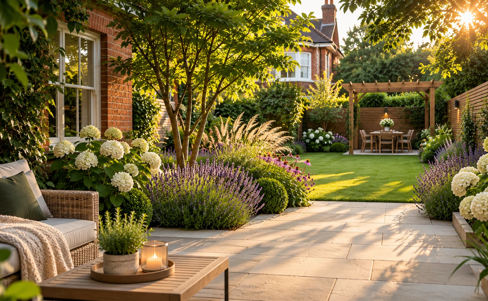

01
Lawn care & maintenance
Ongoing lawn maintenance and general landscape care to help outdoor spaces stay tidy and welcoming.
Lawn maintenance, aeration and outdoor improvements for homeowners in the Durham, Wake and Granville County area.
Services are based on the business's public website, reorganised to make them easier to find.
Ongoing lawn maintenance and general landscape care to help outdoor spaces stay tidy and welcoming.
Aeration service for lawns as listed in the business’s existing service offering. Request an assessment for your property.
Outdoor features and practical landscape improvements, including retaining walls and walkways.
Hedge trimming, pruning and shrubbery care as described on the business’s original homepage.
Pick a simple yard-care goal to see how it might translate into a service enquiry. Final recommendations are confirmed by the business.
Pope's Lawn Care Service is a small landscaping service based on Range Road in Stem, North Carolina. Its published website describes lawn care, landscape maintenance, aeration and hardscaping services, and encourages customers to request an estimate before work begins.
Use the simple enquiry page to explain what you are looking for, or call directly to ask whether your project is a good fit.
Start your enquiry →
Illustrative photograph, not a company portfolio image.
Tell us where you are and which services interest you.
Share the size, materials and timing, or ask for guidance.
The company can discuss availability and give an estimate.